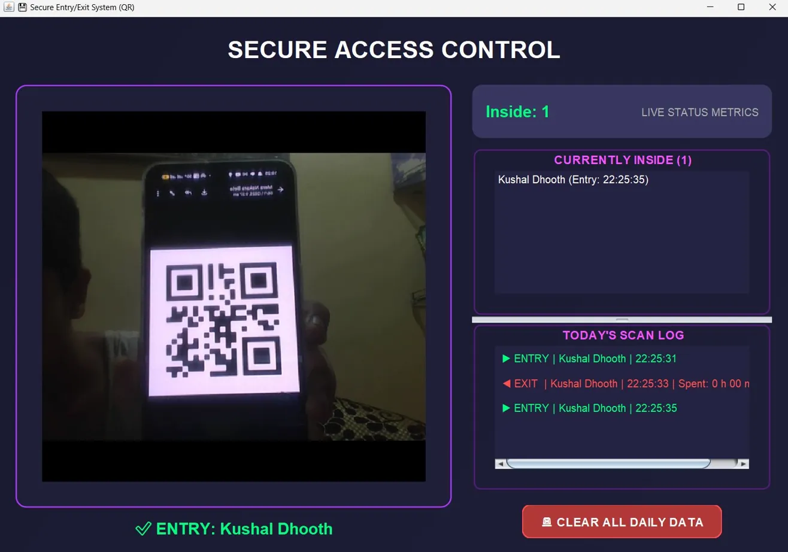

A real-time Java desktop app for QR-based secure access control. Scan to enter, scan again to exit. Tracks live occupancy, timestamps every scan, and logs daily activity with a full-featured GUI.
Developers - Kushal Dhoot - Pavaan Swaroop - Pratyush